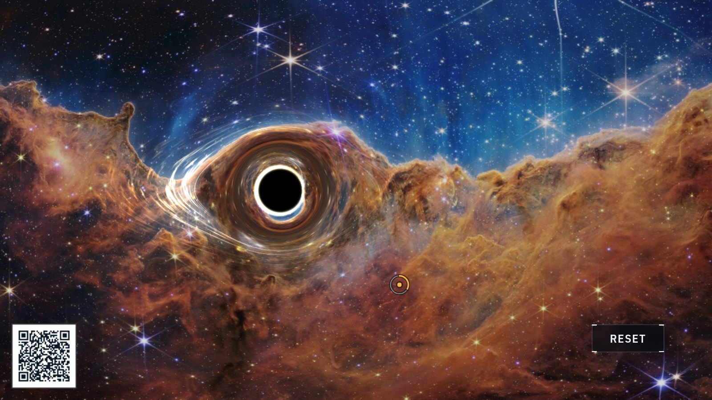

General relativity · gravitational lensing
Black hole
The display bends the live camera image around a simulated black hole, the same way real gravity bends starlight. Every pixel around the dark disc comes from the camera, folded on its way to you.

At the display
- Stand behind it. Your own image smears into an arc around the disc: you are being gravitationally lensed.
- Move something colorful behind the hole and watch it appear twice, once on each side. A lens made of gravity produces double images.
- Find the thin bright ring hugging the disc. That is light which circled the hole, sometimes more than once, before escaping to the camera.
What's really happening
A black hole is what remains when so much mass is squeezed into so little space that, inside a boundary called the event horizon, nothing can move outward again, not even light. The black disc you see is that boundary: a region of the picture from which no light reaches you.
Around it, Einstein's rule takes over: mass bends the space that light travels through. Light still takes the straightest path available, but near the hole the straightest path is curved. Rays that would have missed your eye are folded toward it, so you see things that are actually hidden behind the hole, stretched into arcs and rings.
The look comes straight from the equations. For every pixel, the display traces the light ray backwards past the hole, applying the same mathematics astronomers use for real black holes (the Schwarzschild solution), and asks where in the camera image that ray began.